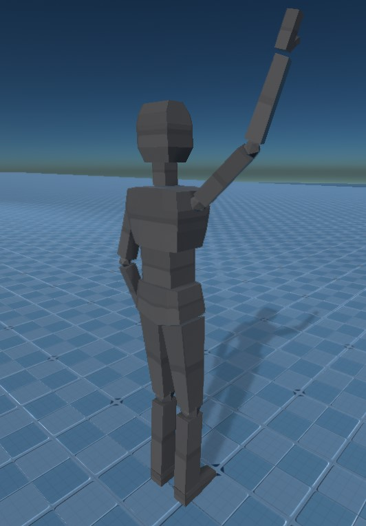

Animated Mesh Component
An animated mesh component is used to instantiate an animated mesh asset. Animated mesh components are mostly identical to regular mesh components except that they can only be used with animated mesh assets. An animated mesh will be skinned with its current animation pose. Which pose is applied to an animated mesh can be controlled with a simple animation component or an animation controller component.

Component Properties
Mesh: The animate mesh asset to render.Color: See mesh component.Materials: See mesh component.